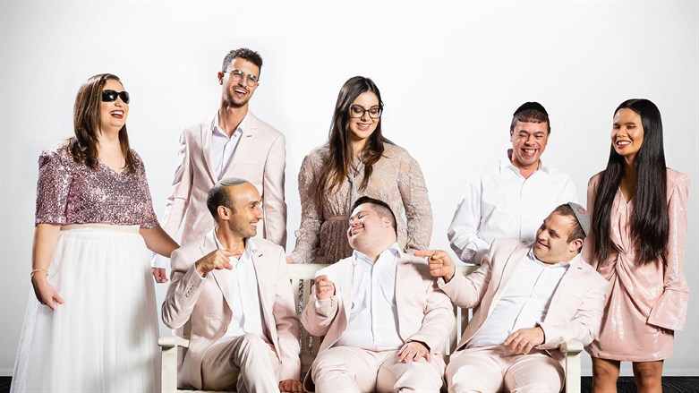
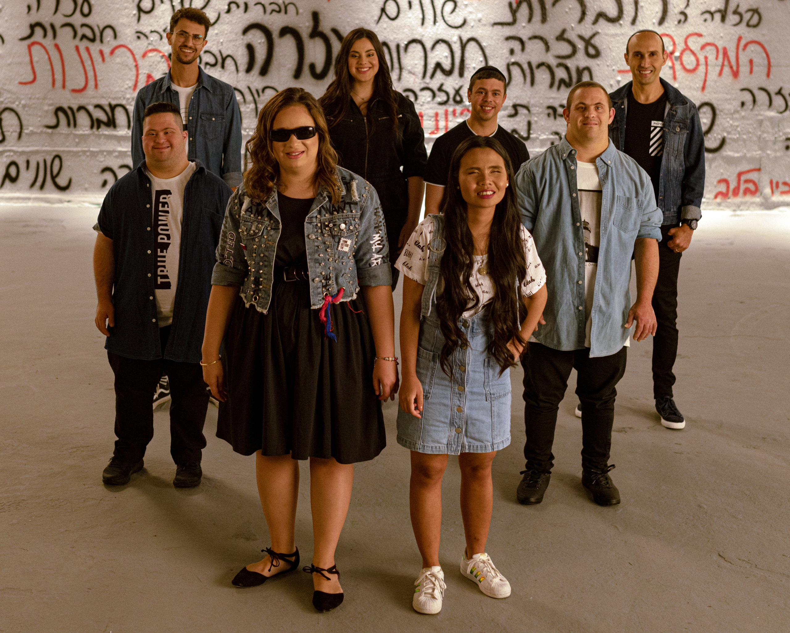

Shalva Band (Hebrew: "להקת שלווה") is a musical band consisting of eight musicians who all live with some degree of disability. The group was established in 2005 by Shalva, an organization that supports and empowers people with disabilities and their families in Israel as a unique means of care for the talented participants in Shalva.
The band gained popular interest while competing in "Star Rising for Eurovision 2019", which is a reality show from the musical genre, which selects the Israeli representative for Eurovision.
The band enjoys growing popularity in Israel, has toured internationally, performed with well-known artists and is at the forefront of popular music forums. Their debut in the United States was for the Israeli-Israeli Council, where they performed for President Donald Trump and summit participants.
Shalva, the Israeli association for the treatment of people with disabilities and their integration into society, is dedicated to providing life-changing care with a limited integration. In addition, Shalva helps and enables families to raise their children with disabilities. The programs of the Shalva National Center set a new standard in the rehabilitation, research and integration of people with disabilities; They set new standards in the field.
 
שאלה 1: שלושה הבדלים עיקריים לפי דעתי בין web1,web2 ו- web3
שאלה 2: הסבר את ההבדלים על ידי דוגמה של תרחיש שימוש:
אבטחת מידע עבור קניות באתרי אינטרנט. Web1 מידע לקריאה בלבד – העיסוק באבטחת מידע פחות נגע לצד המשתמש . 2WEB שהרחיב את הנגישות דורש לדאוג לאבטחת מידע דו צדדית- גם מצד המשתמש,
Web3 יכיר את העדפות קניה של המשתמש ויגן על המידע בצורה אולטימטיבית והבטוחה ביותר.
שאלה 3: הפעולות שיש לבצע באתר "לוואי של אקמול" לכל אחת מהגרסאות:
עבור חיפוש Web1- לא היה מנוע חיפוש, באמצעות אינדקס של קישורים ואתרים היה עלינו לחפש בעצמנו את התשובה בין כל התוכן , עבור 2WEB היה מנוע חיפוש, אך היו מוצגות בפנינו
תשובות רבות שאינן ממוינות- חוכמת ההמונים , אנשים פירסמו ברשתות החברתיות ובבלוגים בנושא אקמול. ועבור 3WEB - בינה מלאכותית - יבצע את החיפוש בהסתמך על תוכן שנמצא באינטרנט ונותן את ההמלצות הרלוונטיות והטובות ביותר עבורנו.